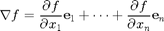
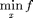
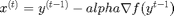
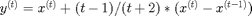
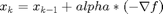

Accelerated Gradient Descent
Contents
Gradient
Gradient descent method is based on gradient

gradient always point to the asent direction
Gradient Descent
f is object function, and this is unconstrained

Accelerated Gradient Descent
for t = 1,2,...


f = (@(X) (exp(X(1,:)-1) + exp(1-X(2,:)) + (X(1,:) - X(2,:)).^2));
%f = (@(X) (sin(0.5*X(1,:).^2 - 0.25 * X(2,:).^2 + 3) .* cos(2*X(1,:) + 1 - exp(X(2,:))) ))
Plot contour
[X, Y] = meshgrid(-2:0.1:2); XX = [reshape(X, 1, numel(X)); reshape(Y, 1, numel(Y))]; %surf(X, Y, reshape(f(XX), length(X), length(X))) contour(X, Y, reshape(f(XX), length(X), length(X)), 50); hold on;

plot gradient of function
for i=1:5:length(XX) tmp = XX(:,i); g = gradient_of_function(f, tmp); %plot([tmp(1),tmp(1)+g(1)*0.02],[tmp(1),tmp(2)+g(1)*0.02]); quiver(tmp(1),tmp(2),g(1)*0.02,g(2)*0.02); end

calculation
x0 = [-1; -1];
without wolfe step, fix step as alpha = 0.01, 
[x_gf, v_gf, h_gf] = gradient_fix_step(f, x0) [x_af, v_af, h_af] = accelerated_gradient_fix_step(f, x0)
x_gf =
-0.0287
0.5194
v_gf =
2.2750
h_gf =
Columns 1 through 7
-1.0000 -1.0014 -1.0012 -0.9997 -0.9970 -0.9933 -0.9886
-1.0000 -0.9261 -0.8590 -0.7977 -0.7413 -0.6894 -0.6413
Columns 8 through 14
-0.9830 -0.9766 -0.9696 -0.9619 -0.9537 -0.9449 -0.9357
-0.5966 -0.5550 -0.5161 -0.4796 -0.4454 -0.4131 -0.3826
Columns 15 through 21
-0.9261 -0.9161 -0.9058 -0.8952 -0.8843 -0.8732 -0.8619
-0.3538 -0.3266 -0.3007 -0.2761 -0.2526 -0.2303 -0.2089
Columns 22 through 28
-0.8503 -0.8387 -0.8269 -0.8150 -0.8029 -0.7908 -0.7786
-0.1885 -0.1689 -0.1501 -0.1320 -0.1147 -0.0980 -0.0818
Columns 29 through 35
-0.7664 -0.7541 -0.7418 -0.7294 -0.7170 -0.7047 -0.6923
-0.0663 -0.0512 -0.0367 -0.0226 -0.0089 0.0044 0.0172
Columns 36 through 42
-0.6800 -0.6676 -0.6553 -0.6431 -0.6308 -0.6186 -0.6065
0.0298 0.0420 0.0538 0.0654 0.0767 0.0877 0.0985
Columns 43 through 49
-0.5944 -0.5823 -0.5704 -0.5585 -0.5466 -0.5348 -0.5231
0.1090 0.1193 0.1294 0.1393 0.1490 0.1585 0.1678
Columns 50 through 56
-0.5115 -0.4999 -0.4884 -0.4770 -0.4657 -0.4544 -0.4433
0.1770 0.1860 0.1949 0.2036 0.2121 0.2206 0.2289
Columns 57 through 63
-0.4322 -0.4212 -0.4103 -0.3995 -0.3887 -0.3781 -0.3675
0.2370 0.2451 0.2531 0.2609 0.2686 0.2763 0.2838
Columns 64 through 70
-0.3570 -0.3466 -0.3363 -0.3261 -0.3160 -0.3059 -0.2960
0.2912 0.2986 0.3058 0.3130 0.3201 0.3271 0.3341
Columns 71 through 77
-0.2861 -0.2764 -0.2667 -0.2571 -0.2475 -0.2381 -0.2288
0.3409 0.3477 0.3544 0.3611 0.3677 0.3742 0.3806
Columns 78 through 84
-0.2195 -0.2103 -0.2012 -0.1922 -0.1833 -0.1745 -0.1657
0.3870 0.3933 0.3996 0.4058 0.4120 0.4181 0.4241
Columns 85 through 91
-0.1570 -0.1484 -0.1399 -0.1315 -0.1231 -0.1148 -0.1066
0.4301 0.4361 0.4419 0.4478 0.4536 0.4593 0.4650
Columns 92 through 98
-0.0985 -0.0904 -0.0825 -0.0746 -0.0668 -0.0590 -0.0513
0.4706 0.4762 0.4818 0.4873 0.4927 0.4982 0.5035
Columns 99 through 101
-0.0437 -0.0362 -0.0287
0.5089 0.5142 0.5194
x_af =
0.7415
1.1499
v_af =
1.7998
h_af =
Columns 1 through 7
-1.0000 -1.0014 -1.0012 -0.9993 -0.9950 -0.9875 -0.9761
-1.0000 -0.9261 -0.8590 -0.7823 -0.6989 -0.6115 -0.5223
Columns 8 through 14
-0.9604 -0.9398 -0.9140 -0.8829 -0.8463 -0.8043 -0.7571
-0.4333 -0.3459 -0.2615 -0.1807 -0.1043 -0.0325 0.0345
Columns 15 through 21
-0.7050 -0.6484 -0.5877 -0.5234 -0.4562 -0.3866 -0.3154
0.0969 0.1548 0.2086 0.2587 0.3057 0.3499 0.3920
Columns 22 through 28
-0.2430 -0.1703 -0.0976 -0.0257 0.0449 0.1139 0.1807
0.4324 0.4716 0.5100 0.5481 0.5861 0.6242 0.6627
Columns 29 through 35
0.2451 0.3067 0.3654 0.4209 0.4732 0.5223 0.5680
0.7016 0.7410 0.7807 0.8208 0.8611 0.9013 0.9413
Columns 36 through 42
0.6106 0.6500 0.6864 0.7198 0.7505 0.7786 0.8042
0.9809 1.0197 1.0575 1.0941 1.1292 1.1626 1.1940
Columns 43 through 49
0.8276 0.8487 0.8679 0.8851 0.9005 0.9142 0.9262
1.2234 1.2505 1.2752 1.2975 1.3174 1.3346 1.3494
Columns 50 through 56
0.9366 0.9455 0.9528 0.9587 0.9631 0.9661 0.9677
1.3618 1.3718 1.3794 1.3849 1.3884 1.3899 1.3897
Columns 57 through 63
0.9679 0.9667 0.9643 0.9606 0.9558 0.9499 0.9429
1.3878 1.3845 1.3798 1.3740 1.3672 1.3595 1.3510
Columns 64 through 70
0.9350 0.9263 0.9169 0.9069 0.8964 0.8855 0.8743
1.3419 1.3322 1.3222 1.3118 1.3012 1.2904 1.2795
Columns 71 through 77
0.8630 0.8517 0.8404 0.8293 0.8185 0.8080 0.7979
1.2686 1.2578 1.2471 1.2366 1.2263 1.2163 1.2067
Columns 78 through 84
0.7883 0.7793 0.7708 0.7629 0.7557 0.7492 0.7433
1.1974 1.1886 1.1803 1.1725 1.1653 1.1587 1.1527
Columns 85 through 91
0.7382 0.7337 0.7300 0.7269 0.7246 0.7229 0.7218
1.1474 1.1428 1.1388 1.1356 1.1330 1.1312 1.1300
Columns 92 through 98
0.7214 0.7216 0.7224 0.7237 0.7256 0.7279 0.7307
1.1295 1.1296 1.1304 1.1317 1.1336 1.1361 1.1389
Columns 99 through 101
0.7339 0.7375 0.7415
1.1422 1.1459 1.1499
find suitable step size
[x_g, v_g, h_g] = gradient(f, x0)
[x_a, v_a, h_ax, h_ay] = accelerated_gradient(f, x0)
% built-in method
[x_in, v_in] = fminunc(f, x0)
x_g =
0.7960
1.2038
v_g =
1.7974
h_g =
Columns 1 through 7
-1.0000 -1.0271 -0.4515 0.6432 0.8185 0.7755 0.7859
-1.0000 0.4778 0.2130 1.0809 1.1279 1.1801 1.2059
Columns 8 through 12
0.7925 0.7963 0.7956 0.7959 0.7960
1.2007 1.2024 1.2033 1.2039 1.2038
x_a =
0.7960
1.2038
v_a =
1.7974
h_ax =
Columns 1 through 7
-1.0000 -1.0169 0.7311 1.0381 1.0156 1.0217 0.9513
-1.0000 -0.0764 0.9765 1.3202 1.4675 1.4183 1.3769
Columns 8 through 14
0.9013 0.8435 0.8050 0.7829 0.7738 0.7789 0.7808
1.3051 1.2559 1.2170 1.1899 1.1882 1.1842 1.1906
Columns 15 through 21
0.7879 0.7930 0.7966 0.7966 0.7968 0.7971 0.7968
1.1945 1.1993 1.2037 1.2046 1.2050 1.2048 1.2047
Columns 22 through 25
0.7966 0.7963 0.7961 0.7960
1.2043 1.2040 1.2038 1.2038
h_ay =
Columns 1 through 7
-1.0000 -1.0169 1.1681 1.1609 1.0044 1.0251 0.9073
-1.0000 -0.0764 1.2398 1.4577 1.5411 1.3902 1.3510
Columns 8 through 14
0.8679 0.8031 0.7770 0.7662 0.7668 0.7829 0.7823
1.2573 1.2214 1.1888 1.1695 1.1870 1.1811 1.1956
Columns 15 through 21
0.7936 0.7972 0.7997 0.7966 0.7970 0.7973 0.7965
1.1978 1.2032 1.2074 1.2054 1.2053 1.2045 1.2046
Columns 22 through 25
0.7964 0.7961 0.7959 0.7960
1.2040 1.2038 1.2036 1.2039
Warning: Gradient must be provided for trust-region algorithm;
using line-search algorithm instead.
Local minimum found.
Optimization completed because the size of the gradient is less than
the default value of the function tolerance.
x_in =
0.7961
1.2039
v_in =
1.7974
plot descent steps
for i=2:length(h_gf) tmp1 = h_gf(:,i-1); tmp2 = h_gf(:,i); quiver(tmp1(1),tmp1(2),tmp2(1)-tmp1(1),tmp2(2)-tmp1(2), 0, 'g','LineWidth',2) end for i=2:length(h_af) tmp1 = h_af(:,i-1); tmp2 = h_af(:,i); quiver(tmp1(1),tmp1(2),tmp2(1)-tmp1(1),tmp2(2)-tmp1(2), 0, 'b','LineWidth',3) end for i=2:length(h_g) tmp1 = h_g(:,i-1); tmp2 = h_g(:,i); quiver(tmp1(1),tmp1(2),tmp2(1)-tmp1(1),tmp2(2)-tmp1(2), 0, 'r','LineWidth',2) end for i=2:length(h_ax) tmp1 = h_ax(:,i-1); tmp2 = h_ax(:,i); quiver(tmp1(1),tmp1(2),tmp2(1)-tmp1(1),tmp2(2)-tmp1(2), 0, 'c','LineWidth',2) end for i=2:length(h_ay) tmp1 = h_ay(:,i-1); tmp2 = h_ay(:,i); quiver(tmp1(1),tmp1(2),tmp2(1)-tmp1(1),tmp2(2)-tmp1(2), 0, 'm','LineWidth',2) end